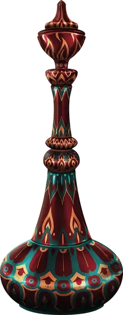

Бутылка с ифритом
Efreeti Bottle
Чудесный предмет, очень редкий

Рекомендованная стоимость 40 000 ЗМ
Когда вы действием Магия снимаете пробку с этой расписанной латунной бутылки, из неё вырывается густой дым. В конце вашего хода дым исчезает с вспышкой безвредного огня, и в незанятом пространстве в пределах 30 футов от вас появляется Ифрит.
Когда бутылка открывается в первый раз, Мастер совершает бросок по следующей таблице, чтобы определить, что происходит.
| 1к10 | Эффект |
| 1 | Ифрит атакует вас. После пяти раундов боя ифрит исчезает, и бутылка теряет свою магию. |
| 2–9 | Ифрит понимает ваши языки и повинуется вашим приказам в течение 1 часа, после чего возвращается в бутылку, и новая пробка удерживает его; пробку нельзя снять в течение следующийх 24 часов. В следующие два открытия бутылки действует тот же эффект. Если бутылку откроют в четвёртый раз, ифрит сбегает и исчезает, и бутылка теряет свою магию. |
| 10 | Ифрит понимает ваши языки и может один раз сотворить для вас заклинание Желание. Он исчезает, когда исполнит желание, или спустя 1 час, после чего бутылка теряет свою магию. |